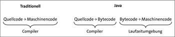
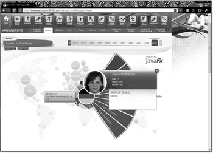

1.2 Warum Java gut ist: die zentralen Eigenschaften
Java ist eine objektorientierte Programmiersprache, die sich durch einige zentrale Eigenschaften auszeichnet. Diese machen sie universell einsetzbar und für die Industrie als robuste Programmiersprache interessant. Da Java objektorientiertes Programmieren ermöglicht, können Entwickler moderne und wiederverwertbare Softwarekomponenten programmieren.
Zum Teil wirkt Java sehr konservativ, aber das liegt daran, dass die Sprachdesigner nicht alles das sofort einbauen, was im Moment gerade hipp ist (XML-Literale sind so ein Beispiel). Java nahm schon immer das, was sich in anderen Programmiersprachen als sinnvoll und gut herausgestellt hat, in den Sprachkern auf, vermied es aber, Dinge aufzunehmen, die nur von sehr wenigen Entwicklern eingesetzt werden bzw. die öfter zu Fehlern führen. In den Anfängen stand C++ als Vorbild da, heute schielt Java auf C# und Skriptsprachen.
Einige der zentralen Eigenschaften wollen wir uns im Folgenden anschauen und dabei auch zentrale Begriffe und Funktionsweisen beleuchten.
1.2.1 Bytecode
Zunächst ist Java eine Programmiersprache wie jede andere. Doch im Gegensatz zu herkömmlichen Übersetzern einer Programmiersprache, die in der Regel Maschinencode für eine spezielle Plattform (etwa Linux oder Windows) und einen bestimmten Prozessor (zum Beispiel für x86er-Mikroprozessoren oder Prozessoren der ARM-Architektur) generieren, erzeugt der Java-Compiler Programmcode, den sogenannten Bytecode, für eine virtuelle Maschine. Bytecode ist vergleichbar mit Mikroprozessorcode für einen erdachten Prozessor, der Anweisungen wie arithmetische Operationen, Sprünge und Weiteres kennt. Der Java-Compiler von Oracle und der Java-Compiler der Entwicklungsumgebung Eclipse sind selbst in Java implementiert und generieren diesen Bytecode (es gibt aber auch Java-Compiler in C++, wie den Jikes-Compiler[8](http://tutego.de/go/jikes)).
1.2.2 Ausführung des Bytecodes durch eine virtuelle Maschine
Damit der Programmcode des virtuellen Prozessors ausgeführt werden kann, führt nach der Übersetzungsphase die Laufzeitumgebung (auch Runtime-Interpreter genannt), also die Java Virtual Machine (JVM), den Bytecode aus.[9](Die Idee des Bytecodes (das Satzprogramm FrameMaker schlägt hier als Korrektur »Bote Gottes« vor) ist schon alt. Die Firma Datapoint schuf um 1970 die Programmiersprache PL/B, die Programme auf Bytecode abbildet. Auch verwendet die Originalimplementierung von UCSD-Pascal, die etwa Anfang 1980 entstand, einen Zwischencode – kurz p-code.) Die Laufzeitumgebung lädt den Bytecode, prüft ihn und führt ihn in einer kontrollierten Umgebung aus. Die JVM bietet eine ganze Reihe von Zusatzdiensten wie einen Garbage-Collector, der Speicher aufräumt, sowie eine starke Typprüfung unter einem klar definierten Speicher- und Threading-Modell.
Es gibt unterschiedliche virtuelle Maschinen verschiedener Hersteller. Die wichtigste ist die JVM im Oracle JDK– kurz JDK – bzw. im OpenJDK. Die JVM ist frei und für Windows, Linux und Solaris erhältlich. Hersteller eigener Betriebssysteme wie IBM oder HP haben eigene Java-Laufzeitumgebungen, und auch Apple pflegte lange Zeit eine eigene JVM, bis Apple den Code an Oracle für das OpenJDK übergab. Weiterhin gibt es quelloffene JVMs, die zum Teil aus akademischen Arbeiten entstanden sind. Eine virtuelle Maschine selbst ist in der Regel in C++ programmiert, genauso wie einige Bibliotheken, und hat eine nicht zu unterschätzende Komplexität.
Java on a chip
Neben einer Laufzeitumgebung, die den Java-Bytecode interpretiert und in den Maschinencode eines Wirtssystems übersetzt, wurde auch ein Prozessor konstruiert, der in der Hardware Bytecode ausführt. Die Entwicklung ging damals verstärkt von Sun aus, und einer der ersten Prozessoren war PicoJava. Bei der Entwicklung des Prozessors stand nicht die maximale Geschwindigkeit im Vordergrund, sondern die Kosten pro Chip, um ihn in jedes Haushaltsgerät einbauen zu können. Das Interesse an Java auf einem Chip zieht nun nach einer Flaute wieder an, denn viele mobile Endgeräte müssen mit schnellen Ausführungseinheiten versorgt werden.
Die ARM-Technologie des Unternehmens ARM Limited erlaubt durch Jazelle DBX eine sehr schnelle Ausführung von Java-Bytecode. Mit dem Prozessor S5L8900 hat Samsung die ARM-Technologie ARM1176JZ(F)-S zusammen mit Speicherschnittstellen und Teilen für Connectivity, Peripherie und Multimedia-Möglichkeiten in Silizium gegossen, und als 667-MHz-Prozessor sitzt er nun in Apples iPhone. Die Ironie des Schicksals ist dabei, dass Apple im iPhone bisher keine Java-Unterstützung vorsieht.
Der aJ-102 und aJ-200 von aJile Systems Inc. sind weitere Prozessoren, die Java-Bytecode direkt ausführen; der aJ-200 unterstützt auch direktes Threading. Und wenn wir den Pressemitteilungen von Azul Systems[10](http://www.azulsystems.com/) glauben können, gibt es auch bald einen 64-Bit-Prozessor mit 48 Kernen, der Java- und auch .NET-Bytecode ausführt. Ein Doppelherz tut auch Java gut.
1.2.3 Plattformunabhängigkeit
Eine zentrale Eigenschaft von Java ist seine Plattformunabhängigkeit bzw. Betriebssystemunabhängigkeit. Diese wird durch zwei zentrale Konzepte erreicht. Zum einen bindet sich Java nicht an einen bestimmten Prozessor oder eine bestimmte Architektur, sondern der Compiler generiert Bytecode, den eine Laufzeitumgebung dann abarbeitet. Zum anderen abstrahiert Java von den Eigenschaften eines konkreten Betriebssystems, schafft etwa eine Schnittstelle zum Ein-/Ausgabesystem oder eine API für grafische Oberflächen. Entwickler programmieren immer gegen eine Java-API aber nie gegen die API der konkreten Plattform, etwa die Windows- oder Unix-API. Die Java-Laufzeitumgebung bildet Aufrufe etwa auf Dateien für das jeweilige System ab, ist also Vermittler zwischen den Java-Programmen und der eigentlichen Betriebssystem-API.
Zwar ist das Konzept einer plattformneutralen Programmiersprache schon recht alt, doch erst in den letzten 10 Jahren kam mehr und mehr hinzu. Neben Java sind plattformunabhängige Programmiersprachen und Laufzeitumgebungen .NET-Sprachen wie C# auf der CLR (Common Language Runtime – entspricht der Java VM), Perl, Python oder Ruby. Plattformunabhängigkeit ist schwer, denn die Programmiersprache und ein Bytecode produzierender Compiler ist nur ein Teil – der größere Teil ist die Laufzeitumgebung und eine umfangreiche API. Zwar ist auch C an sich eine portable Sprache, und ANSI C-Programme lassen sich von jedem C-Compiler auf jedem Betriebssystem mit Compiler übersetzen, aber das Problem sind die Bibliotheken, die über ein paar simple Dateioperationen nicht hinauskommen.
In Java 7 ändert sich die Richtung etwas, was sich besonders an der neuen API für die Dateisystemunterstützung ablesen lässt. Vor Java 7 war die Datei-Klasse so aufgebaut, dass die Semantik gewisser Operationen nicht ganz genau spezifiziert war und auf diese Weise sehr plattformabhängig war. Es gibt aber in der Datei-Klasse keine Operation, die nur auf einer Plattform zur Verfügung steht und andere Plattformen ausschließt. Das Credo lautete immer: Was nicht auf allen Plattformen existiert, kommt nicht in die Bibliothek.[11](Es gibt sie durchaus, die Methoden, die nur zum Beispiel auf Windows zur Verfügung stehen. Aber dann liegen sie nicht in einem java- oder javax-Paket, sondern in einem internen Paket.) Mit Java 7 gibt es einen Wechsel: Nun sind plattformspezifische Dateieigenschaften zugänglich. Es bleibt abzuwarten, ob in der Zukunft in anderen API-Bereichen – vielleicht bei grafischen Oberflächen – noch weitere Beispiele hinzukommen.
1.2.4 Java als Sprache, Laufzeitumgebung und Standardbibliothek
Java ist nicht nur eine Programmiersprache, sondern ebenso ein Laufzeitsystem, was Oracle durch den Begriff »Java Platform« klarstellen will. So gibt es neben der Programmiersprache Java durchaus andere Sprachen, die eine Java-Laufzeitumgebung ausführen, etwa diverse Skriptsprachen wie Groovy (http://groovy.codehaus.org/), JRuby (http://jruby.org/), Jython (http://www.jython.org/) oder Scala (http://www.scala-lang.org/). Skriptsprachen auf der Java-Plattform werden immer populärer; sie etablieren eine andere Syntax, nutzen aber die JVM und die Bibliotheken.
Zu der Programmiersprache und JVM kommt ein Satz von Standardbibliotheken für grafische Oberflächen, Ein-/Ausgabe und Netzwerkoperationen. Das bildet die Basis für höherwertige Dienste wie Datenbankanbindungen oder Web-Services. Integraler Bestandteil der Standardbibliothek seit Java 1.0 sind weiterhin Threads. Sie sind leicht zu erzeugende Ausführungsstränge, die unabhängig voneinander arbeiten können. Mittlerweile unterstützen alle populären Betriebssysteme diese »leichtgewichtigen Prozesse« von Haus aus, sodass die JVM diese parallelen Programmteile nicht nachbilden muss, sondern auf das Betriebssystem verweisen kann. Bei den neuen Multi-Core-Prozessoren sorgt das Betriebssystem für eine optimale Ausnutzung der Rechenleistung, da Threads wirklich nebenläufig arbeiten können.
Zu den Standardbibliotheken kommen dann weitere kommerzielle oder quelloffene Bibliotheken hinzu. Egal, ob es darum geht, PDF-Dokumente zu schreiben, Excel-Dokumente zu lesen, in SAP Daten zu übertragen oder bei einem Wincor-Bankautomaten den Geldauswurf zu steuern – für all das gibt es Java-Bibliotheken.
1.2.5 Objektorientierung in Java
Java ist als Sprache entworfen worden, die es einfach machen sollte, große, fehlerfreie Anwendungen zu schreiben. In C-Programmen erwartet uns statistisch gesehen alle 55 Programmzeilen ein Fehler. Selbst in großen Softwarepaketen (ab einer Million Codezeilen) findet sich, unabhängig von der zugrunde liegenden Programmiersprache, im Schnitt alle 200 Programmzeilen ein Fehler. Selbstverständlich gilt es, diese Fehler zu beheben, obwohl bis heute noch keine umfassende Strategie für die Softwareentwicklung im Großen gefunden wurde. Viele Arbeiten der Informatik beschäftigen sich mit der Frage, wie Tausende Programmierer über Jahrzehnte miteinander arbeiten und Software entwerfen können. Dieses Problem ist nicht einfach zu lösen und wurde im Zuge der Softwarekrise Mitte der 1960er-Jahre heftig diskutiert.
Eine Laufzeitumgebung eliminiert viele Probleme technischer Natur. Objektorientierte Programmierung versucht, die Komplexität des Software-Problems besser zu modellieren. Die Philosophie ist, dass Menschen objektorientiert denken und eine Programmierumgebung diese menschliche Denkweise abbilden sollte. Genauso wie Objekte in der realen Welt verbunden sind und kommunizieren, muss es auch in der Softwarewelt möglich sein. Objekte bestehen aus Eigenschaften; das sind Dinge, die ein Objekt »hat« und »kann«. Ein Auto »hat« Räder und einen Sitz und »kann« beschleunigen und bremsen. Objekte entstehen aus Klassen, das sind Beschreibungen für den Aufbau von Objekten.
Die Sprache Java ist nicht bis zur letzten Konsequenz objektorientiert, so wie Smalltalk es vorbildlich demonstriert. Primitive Datentypen wie Ganzzahlen oder Fließkommazahlen werden nicht als Objekte verwaltet. Als Grund für dieses Design wird genannt, dass der Compiler und die Laufzeitumgebung mit der Trennung besser in der Lage waren, die Programme zu optimieren. Allerdings zeigt die virtuelle Maschine von Microsoft für die .NET-Plattform und andere moderne Programmiersprachen, dass auch ohne die Trennung eine gute Performance möglich ist.
1.2.6 Java ist verbreitet und bekannt
Unabhängig von der Leistungsfähigkeit einer Sprache zählen am Ende doch nur betriebswirtschaftliche Faktoren: Wie schnell und billig lässt sich ein vom Kunden gewünschtes System bauen, und wie stabil und änderungsfreundlich ist es? Dazu kommen Fragen wie: Wie sieht der Literaturmarkt aus, wie die Ausbildungswege, woher bekommt ein Team einen Entwickler oder Consultant, wenn es brennt? Dies sind nicht unbedingt Punkte, die Informatiker beim Sprachvergleich auf die erste Stelle setzen, sie sind aber letztendlich für den Erfolg einer Software-Plattform entscheidend. Fast jede Universität lehrt Java, und mit Java ist ein Job sicher. Konferenzen stellen neue Trends vor und schaffen Trends. Diese Kette ist nicht zu durchbrechen, und selbst wenn heute eine neue Super-Sprache mit dem Namen »Bali« auftauchen würde, würde es Jahre dauern, bis ein vergleichbares System geschaffen wäre. Wohlgemerkt: Das sagt nichts über die Innovations- oder Leistungsfähigkeit aus, nur über die Marktsättigung, aber dadurch wird Java eben für so viele interessant.
| Java-Entwickler sind glücklich |
|
Andrew Vos hat sich Kommentare angeschaut, mit denen Entwickler ihre Programme in die Versionsverwaltung einpflegen.[12](http://tutego.de/go/profanity) Dabei zählt er, wie viele »böse« Wörter wie »shit«, »omg«, »wtf« beim Check-in vorkommen. Seine Herangehensweise ist zwar statistisch nicht ganz ordentlich, aber bei seinen untersuchten Projekten stehen Java-Entwickler recht gut da und haben wenig zu fluchen. Die Kommentare sind amüsant zu lesen und geben unterschiedliche Erklärungen, etwa dass JavaScript-Programmierer eigentlich nur über den IE fluchen, aber nicht über die JavaScript an sich, und dass Python-Programmierer zum Fluchen zu anständig sind. |
1.2.7 Java ist schnell: Optimierung und Just-in-Time Compilation
Die Laufzeitumgebung von Java 1.0 startete mit einer puren Interpretation des Bytecodes. Das bereitete massive Geschwindigkeitsprobleme, denn beim Interpretieren muss die Arbeit eines Prozessors – das Erkennen, Dekodieren und Ausführen eines Befehls – noch einmal in Software wiederholt werden; das kostet viel Zeit. Java-Programme der ersten Stunde waren daher deutlich langsamer als übersetzte C(++)-Programme und brachten Java den Ruf ein, eine langsame Sprache zu sein.
Die Technik der Just-in-Time-(JIT-)Compiler[13](Diese Idee ist auch schon alt: HP hatte um 1970 JIT-Compiler für BASIC-Maschinen.) war der erste Schritt, das Problem anzugehen. Ein JIT-Compiler beschleunigt die Ausführung der Programme, indem er zur Laufzeit den Bytecode, also die Programmanweisungen der virtuellen Maschine, in Maschinencode der jeweiligen Plattform übersetzt. Anschließend steht ein an die Architektur angepasstes Programm im Speicher, das der physikalische Prozessor ohne Interpretation schnell ausführt. Mit dieser Technik entspricht die Geschwindigkeit der von anderen übersetzten Sprachen. Jedoch übersetzt ein guter JIT nicht alles, sondern versucht über diverse Heuristiken herauszufinden, ob sich eine Übersetzung – die ja selbst Zeit kostet – überhaupt lohnt. Die JVM beginnt daher immer mit einer Interpretation und wechselt dann in einen Compiler-Modus, wenn es nötig wird. Somit ist Java im Grunde eine compilierte, aber auch interpretierte Programmiersprache – von der Ausführung durch Hardware einmal abgesehen. Vermutlich ist der Java-Compiler in der JVM der am häufigsten laufende Compiler überhaupt.
Der JIT-Compiler von Sun wurde immer besser und entwickelte sich weiter zu einer Familie von virtuellen Maschinen, die heute unter dem Namen HotSpot bekannt sind. Das Besondere ist, dass HotSpot die Ausführung zur Laufzeit überwacht und »heiße« (sprich: kritische) Stellen findet, etwa Schleifen mit vielen Wiederholungen – daher auch der Name »HotSpot«. Daraufhin steuert die JVM ganz gezielt Übersetzungen und Optimierungen. Zu den Optimierungen gehören Klassiker, wie das Zusammenfassen von Ausdrücken, aber auch viele dynamische Optimierungen fallen in diesen Bereich, zu denen ein statischer C++-Compiler nicht in der Lage wäre, weil ihm der Kontext fehlt.[14](Dynamische Methodenaufrufe sind in der Regel sehr schnell, weil die JVM die Hierarchie kennt.) Zudem kann die JVM Bytecode zu jeder Zeit nachladen, der wie alle schon geladenen Teile genauso optimiert wird. Der neu eingeführte Programmcode kann sogar alte Optimierungen und Maschinencode ungültig machen, den dann die JVM neu übersetzt.
HotSpot steht genauso wie das Laufzeitsystem unter der freien GPL-Lizenz und ist für jeden einsehbar. Die JVM ist hauptsächlich in C++ programmiert, aber aus Performance-Gründen befinden sich dort auch Teile in Maschinencode, was die Portierung nicht ganz einfach macht. Das Zero-Assembler Project (http://openjdk.java.net/projects/zero/) hat sich zum Ziel gesetzt, HotSpot ohne Maschinencode zu realisieren, sodass eine Portierung einfach ist. Seit dem JDK 1.6.0_04-b12, das Ende 2007 veröffentlicht wurde, hat die HotSpot VM eine eigene Entwicklung und Versionsnummer, die für die letzten Java 6-Versionen bei über 20 liegt.
Abbildung 1.2: Traditioneller Compiler und Java-Compiler mit Laufzeitumgebung
1.2.8 Das Java-Security-Modell
Das Java-Security-Modell gewährleistet den sicheren Programmablauf auf den verschiedensten Ebenen. Der Verifier liest Code und überprüft die strukturelle Korrektheit und Typsicherheit. Weist der Bytecode schon Fehler auf, kommt der Programmcode erst gar nicht zur Ausführung. Die Prüfung ist wichtig, denn ein Klassenlader (engl. class loader) kann Klassendateien von überall her laden. Während vielleicht dem Bytecode aus dem lokalen Laufwerk vertraut werden kann, gilt das mitunter nicht für Code, der über ein ungesichertes Netzwerk übertragen wurde, wo ein Dritter plötzlich Schadcode einfügt (Man-in-the-Middle-Angriff). Ist der Bytecode korrekt in der virtuellen Maschine angemeldet, folgen weitere Prüfungen. So sind etwa (mit entsprechender Anpassung) keine Lese-/Schreibzugriffe auf private Variablen möglich. Treten Sicherheitsprobleme auf, werden diese durch Exceptions zur Laufzeit gemeldet – so kommt es etwa zu keinen Pufferüberläufen. Auf der Programmebene überwacht ein Security-Manager Zugriffe auf das Dateisystem, die Netzwerk-Ports, externe Prozesse und weitere Systemressourcen. Das Sicherheitsmodell kann vom Programmierer erweitert und über Konfigurationsdateien einfach konfiguriert werden.
1.2.9 Zeiger und Referenzen
In Java gibt es keine Zeiger (engl. pointer), wie sie aus anderen Programmiersprachen bekannt und gefürchtet sind. Da eine objektorientierte Programmiersprache ohne Verweise aber nicht funktioniert, werden Referenzen eingeführt. Eine Referenz repräsentiert ein Objekt, und eine Variable speichert diese Referenz. Die Referenz hat einen Typ, der sich nicht ändern kann. Ein Auto bleibt ein Auto und kann nicht als Laminiersystem angesprochen werden. Eine Referenz unter Java ist nicht als Zeiger auf Speicherbereiche zu verstehen, obwohl sie intern durchaus so implementiert werden kann; das ist für den Benutzer aber nie sichtbar.
| Beispiel * |
|
Das folgende Programm zeigt, dass das Pfuschen in C++ leicht möglich ist und wir Zugriff auf private Elemente über eine Zeigerarithmetik bekommen können. Für uns Java-Programmierer ist dies ein abschreckendes Beispiel. #include <cstring> |
In Java ist es nicht möglich, auf beliebige Teile des Speichers zuzugreifen. Auch sind private Variablen erst einmal sicher.[15](Ganz stimmt das allerdings nicht. Mit Reflection lässt sich da schon etwas machen, wenn die Sicherheitseinstellungen das nicht verhindern.) Der Compiler bricht mit einer Fehlermeldung ab – beziehungsweise löst das Laufzeitsystem eine Ausnahme (Exception) aus –, wenn das Programm einen Zugriff auf eine private Variable versucht.
1.2.10 Bring den Müll raus, Garbage-Collector!
In Programmiersprachen wie C++ lässt sich etwa die Hälfte der Fehler auf falsche Speicher-Allokation zurückführen. Mit Objekten zu arbeiten, bedeutet unweigerlich, sie anzulegen und zu löschen. Die Java-Laufzeitumgebung kümmert sich jedoch selbstständig um die Verwaltung dieser Objekte – die Konsequenz: Sie müssen nicht freigegeben werden, ein Garbage-Collector (kurz GC) entfernt sie. Der GC ist Teil des Laufzeitsystems von Java. Nach dem expliziten Generieren eines Objekts überwacht Java permanent, ob das Objekt noch gebraucht wird, also referenziert wird. Umgekehrt bedeutet das aber auch: Wenn auf einem Objekt vielleicht noch ein heimlicher Verweis liegt, kann der GC das Objekt nicht löschen. Diese sogenannten hängenden Referenzen sind ein Ärgernis und zum Teil nur durch längere Debugging-Sitzungen zu finden.
Der GC ist ein nebenläufiger Thread im Hintergrund, der nicht referenzierte Objekte findet, markiert und dann von Zeit zu Zeit entfernt. Damit macht der Garbage-Collector die Funktionen free() aus C oder delete() aus C++ überflüssig. Wir können uns über diese Technik freuen, da viele Probleme damit verschwunden sind. Nicht freigegebene Speicherbereiche gibt es in jedem größeren Programm, und falsche Destruktoren sind vielfach dafür verantwortlich. An dieser Stelle sollte nicht verschwiegen werden, dass es auch ähnliche Techniken für C(++) gibt[16](Ein bekannter Garbage-Collector stammt von Hans-J. Boehm, Alan J. Demers und Mark Weiser. Er ist unter http://tutego.de/go/boehmgc zu finden. Der Algorithmus arbeitet jedoch konservativ, das heißt, er findet nicht garantiert alle unerreichbaren Speicherbereiche, sondern nur einige. Eingesetzt wird der Boehm-Demers-Weiser-GC unter anderem in der X11-Bibliothek. Dort sind die malloc()- und free()-Funktionen einfach durch neue Methoden ausgetauscht worden.) und dass alle modernen Programmiersprachen (bzw. deren Laufzeitumgebungen) einen GC besitzen.
1.2.11 Ausnahmebehandlung
Java unterstützt ein modernes System, um mit Laufzeitfehlern umzugehen. In die Programmiersprache wurden Ausnahmen (engl. exceptions) eingeführt: Objekte, die zur Laufzeit generiert werden und einen Fehler anzeigen. Diese Problemstellen können durch Programmkonstrukte gekapselt werden. Die Lösung ist in vielen Fällen sauberer als die mit Rückgabewerten und unleserlichen Ausdrücken im Programmfluss. In C++ gibt es ebenso Exceptions, die aber nicht so intensiv wie in Java benutzt werden.
Aus Geschwindigkeitsgründen überprüft C(++)[17](In C++ ließe sich eine Variante mit einem überladenen Operator lösen.) die Array-Grenzen (engl. range checking) standardmäßig nicht, was ein Grund für viele Sicherheitsprobleme ist. Ein fehlerhafter Zugriff auf das Element n + 1 eines Feldes der Größe n kann zweierlei bewirken: Ein Zugriffsfehler tritt auf, oder – viel schlimmer – andere Daten werden beim Schreibzugriff überschrieben, und der Fehler ist nicht mehr nachvollziehbar.
Das Laufzeitsystem von Java überprüft automatisch die Grenzen eines Arrays. Diese Überwachungen können auch nicht abgeschaltet werden, wie es Compiler anderer Programmiersprachen mitunter erlauben. Eine clevere Laufzeitumgebung findet heraus, ob keine Überschreitung möglich ist, und optimiert diese Abfrage dann weg; Feldüberprüfungen kosten daher nicht mehr die Welt und machen sich nicht automatisch in einer schlechteren Performance bemerkbar.
1.2.12 Einfache Syntax der Programmiersprache Java
Die Syntax von Java ist bewusst einfach gehalten worden und strotzt nicht vor Operatoren oder Komplexität wie C++ oder Perl. Java erbte eine einfache und grundlegende Syntax wie die geschweiften Klammern von C, vermied es aber, die Syntax mit allen möglichen Dingen zu überladen. Da Programme häufiger gelesen als geschrieben werden, muss eine Syntax klar und durchgängig sein – je leichter Entwickler auf den ersten Blick sehen, was passiert, desto besser ist es.
»Always code as if the guy who ends up maintaining your code will be a violent psychopath who knows where you live« – John Woods
Es hat keinen Wert an sich, wenn Programme einfach nur kompakt sind, aber die Zeit, die ein Mensch zum Verstehen braucht, exponentiell steigt. Auch wenn das folgende Perl-Beispiel aus den »The Fifth Obfuscated Perl Contest Results«[18](http://www.foo.be/docs/tpj/issues/vol5_3/tpj0503-0014.html) ganz bewusst als unleserliches Programm entworfen wurde, so wird jedem Betrachter schon beim Anblick schwummerig:
#:: ::-| ::-| .-. :||-:: 0-| .-| ::||-| .:|-. :||
open(Q,$0);while(<Q>){if(/^#(.*)$/){for(split('-',$1)){$q=0;for(split){s/\|
/:.:/xg;s/:/../g;$Q=$_?length:$_;$q+=$q?$Q:$Q*20;}print chr($q);}}}print"\n";
#.: ::||-| .||-| :|||-| ::||-| ||-:: :|||-| .:|
Eine einfachere Syntax lässt sich als Fluch (mehr Schreibarbeit) und auch als Segen (in der Regel leichter verständlich) auffassen. Java macht vieles richtig, aber es gibt ganz klar Stellen, an denen es hätte auch einfacher sein können (Stichwort Generics). Dennoch haben die Java-Entwickler gut daran getan, auf Konstrukte zu verzichten; zwei aus C(++) ausgelassene Fähigkeiten sollen exemplarisch vorgestellt werden.
In Java gibt es keine benutzerdefinierten überladenen Operatoren
Wenn wir einen Operator wie das Pluszeichen verwenden und damit Ausdrücke addieren, tun wir dies meistens mit bekannten Rechengrößen wie Fließkommazahlen (Gleitkommazahlen) oder Ganzzahlen. Da das gleiche Operatorzeichen auf unterschiedlichen Datentypen gültig ist, nennt sich so ein Operator »überladen«. Operatoren wie +, -, *, / sind für Ganzzahlen und Gleitkommazahlen ebenso überladen wie die Operatoren Oder, Und oder Xor für Ganzzahlen und boolesche Werte. Der Vergleichsoperator == beziehungsweise != ist ebenfalls überladen, denn er lässt sich bei allen Zahlen, aber auch bei Wahrheitswerten oder Objektverweisen verwenden. Ein auffälliger überladener Operator ist das Pluszeichen bei Zeichenketten. Strings können damit leicht zusammengesetzt werden. Informatiker verwenden in diesem Zusammenhang auch gern das Wort Konkatenation (selten Katenation). Bei den Strings "Hallo" + " " + "du da" ist "Hallo du da" die Konkatenation der Zeichenketten.
Einige Programmiersprachen erlauben es, die vorhandenen Operatoren mit neuer Bedeutung zu versehen. In Java ist das nicht möglich. In C++ ist das Überladen von Operatoren erlaubt, sodass etwa das Pluszeichen dafür genutzt werden kann, geometrische Punktobjekte zu addieren, Brüche zu teilen oder eine Zeile in eine Datei zu schreiben. Repräsentieren die Objekte mathematische Konstrukte, ist es ganz praktisch, wenn Operationen über kurze Operatorzeichen benannt werden und nicht über längere Methoden – ein matrix1.add(matrix2) ist sperriger als ein matrix1 + matrix2. Obwohl benutzerdefinierte überladene Operatoren zuweilen ganz praktisch sind, verführte die Möglichkeit oft zu unsinnigem Gebrauch in C++. Daher haben die Sprachdesigner das für Java nicht vorgesehen, aber einige alternative Sprachen auf der JVM ermöglichen dies, denn es ist eine Sprachbeschränkung und keine Beschränkung der virtuellen Maschine.
Kein Präprozessor für Textersetzungen *
Viele C(++)-Programme enthalten Präprozessor-Direktiven wie #define, #include oder #if zum Einbinden von Prototyp-Definitionen oder zur bedingten Compilierung. Einen solchen Präprozessor gibt es in Java aus unterschiedlichen Gründen nicht:
- Header-Dateien sind in Java nicht nötig, da der Compiler die benötigten Informationen wie Methodensignaturen direkt aus den Klassendateien liest.
- Da in Java die Datentypen eine feste, immer gleiche Länge haben, entfällt die Notwendigkeit, abhängig von der Plattform unterschiedliche Längen zu definieren.
- Pragma-Steuerungen sind im Programmcode unnötig, da die virtuelle Maschine ohne äußere Steuerung Programmoptimierungen vornimmt.
Ohne den Präprozessor sind schmutzige Tricks wie #define private public oder Makros, die Fehler durch eine doppelte Auswertung erzeugen, von vornherein ausgeschlossen. Im Übrigen findet sich der Private/Public-Hack im Quellcode von StarOffice. Die obere Definition ersetzt jedes Auftreten von private durch public – mit der Konsequenz, dass der Zugriffsschutz ausgehebelt ist.
Ohne Präprozessor ist auch die bedingte Kompilierung mit #ifdef nicht mehr möglich. Innerhalb von Anweisungsblöcken können wir uns in Java damit behelfen, Bedingungen der Art if (true) oder if (false) zu formulieren; über den Schalter -D auf der Kommandozeile lassen sich Variablen einführen, die dann eine if-Anweisung über System.getProperty() zur Laufzeit prüfen kann.[19](Da aber besonders bei mobilen Endgeräten Präprozessor-Anweisungen für unterschiedliche Geräte praktisch sind, gibt es Hersteller-Erweiterungen wie die von NetBeans (http://tutego.de/go/nbpreprocessor).)
1.2.13 Java ist Open Source
Schon seit Java 1.0 gibt es den Quellcode der Standardbibliotheken (falls er beim JDK mitinstalliert wurde, befindet er sich im Wurzelverzeichnis unter dem Namen src.zip), und jeder Interessierte konnte einen Blick auf die Implementierung werfen. Zwar legte Sun damals also die Implementierungen offen, doch weder die Laufzeitumgebung noch der Compiler oder die Bibliotheken standen unter einer akzeptierten Open-Source-Lizenz. Zehn Jahre seit der ersten Freigabe von Java gab es Forderungen an Sun, die gesamte Java-Plattform unter eine bekanntere Lizenzform wie die GNU General Public License (GPL) oder die BSD-Lizenz zu stellen. Dabei deutete Jonathan Schwartz in San Francisco bei der JavaOne-Konferenz 2006 schon an: »It’s not a question of whether we’ll open source Java, now the question is how.« War die Frage also statt des »Ob« ein »Wie«, kündigte Rich Green bei der Eröffnungsrede der JavaOne-Konferenz im Mai 2007 die endgültige Freigabe von Java als OpenJDK[20](http://openjdk.java.net/) unter der Open-Source-Lizenz GPL 2 an. Dem war Ende 2006 die Freigabe des Compilers und der virtuellen Maschine vorausgegangen.
Die Geschichte ist allerdings noch ein wenig komplizierter. Obwohl OpenJDK nun unter der GPL stand, enthielt es doch Teile wie den Font-Renderer, Sound-Unterstützung, Farbmanagement oder SNMP-Code, die als binäre Pakete beigelegt wurden, weil etwa die Rechte zur Veröffentlichung fehlten. Sun nennt diese Teile, die etwa 4 % vom JDK 6 ausmachen, belasteten Code (engl. encumbered code)[21](http://www.sun.com/software/opensource/java/faq.jsp#h). Das hinderte puristische Linux-Distributoren daran, OpenJDK auszuliefern. RedHat startete im Juni 2007 das Projekt IcedTea, um diese binären Teile auf der Basis des OpenJDK durch GPL-Software zu ersetzen. So basiert der Font-Renderer zum Beispiel auf FreeType[22](http://www.freetype.org/) und das Farbmanagement auf little CMS[23](http://www.littlecms.com/). Mit diesen Ersetzungen erfüllte das OpenJDK mit IcedTea im Juni 2008 die Anforderungen des Technology Compatibility Kit (TCK) von Sun und ist in der Öffentlichkeit seither unter dem Namen OpenJDK 6 bekannt. Daraufhin floss das OpenJDK 6 plus den Ersetzungen unter der GPLv2 in Linux-Distributionen wie Fedora und Debian ein.
Das OpenJDK bildet die Basis von Java 7, und jeder Entwickler kann sein eigenes Java zusammenstellen und beliebige Erweiterungen veröffentlichen. Damit ist der Schritt vollzogen, dass auch Java auf Linux-Distributionen Platz finden darf, die Java vorher aus Lizenzgründen nicht integrieren wollten.
Auch wenn es sich so anhört, als ob das Oracle JDK bzw. OpenJDK das Gleiche sei, ist das nicht ganz richtig: Zwar basieren Oracle JDK und OpenJDK auf den gleichen Quellen (bei der Version 7 etwa zu 95 %), doch sind beim Oracle JDK immer noch proprietäre Dinge enthalten, und nicht alles ist hundertprozentig quelloffen und GPL. Das gilt für die Version 7 wie für die Version 6. Das Oracle JDK steht unter der Binary Code License; genau die muss jeder abnicken, der das JDK von der Webseite laden möchte.
Bei der 6er-Reihe kommt noch eine Besonderheit dazu, wie es die Versionsnummern[24](https://gist.github.com/925323) ganz gut zeigen. Während das Oracle JDK zum Beispiel im Juni 2011 bei Versionsnummer 1.6.0_26-b03 steht, ist das OpenJDK bei Version 6 b22. Die Versionsnummern sind deshalb völlig unabhängig, weil beide Projekte auch unabhängig voneinander laufen. Das hat mit der Geschichte zu tun. Nach der Entwicklung des JDK 6, das nicht unter der GPL steht, ging es mit dem JDK 7 logisch weiter. Aus dem JDK 7 (Build 10) entstand dann OpenJDK, das heute mit der Versionsnummer OpenJDK 7 genannt wird. OpenJDK 7 und JDK 7 entwickeln sind Hand in Hand, und Code-Änderungen gehen mal in die eine Richtung und mal in die andere.
Jetzt kommt die Besonderheit: Das OpenJDK 6 entstand nicht, wie vermutet werden könnte, aus dem Oracle JDK 1.6, sondern aus dem OpenJDK 7 (Build 20). Es wurden nur Java 7-Eigenschaften entfernt. So läuft das auch bis heute: Die meisten Änderungen am OpenJDK 6 sind Backports von OpenJDK 7. Änderungen am OpenJDK 7 stammen überwiegend von Oracle, und häufig ist es die Firma RedHat, die diese Änderungen in OpenJDK 6 portiert. Zwischen dem OpenJDK 6 und dem JDK 1.6 gibt es einen Quellcodeaustausch bei Bug-Fixes, doch die Codebasis ist unterschiedlich. Oracle JDK 6 ist im Wartungsmodus, und großartige Veränderungen passieren bis auf Fehlerbereinigungen nicht. Oracle JDK 6 und JDK 7 sind immer noch die zentrale Versionen, die die Downloadseite von Oracle anbietet; das OpenJDK liegt auf einem extra Server http://openjdk.java.net/, die Binaries für Linux und Windows finden sich unter http://jdk7.java.net/java-se-7-ri/. Interessanterweise ist das OpenJDK auch die Referenzimplementierung für Java SE, nicht das Oracle JDK.
1.2.14 Wofür sich Java weniger eignet
Java ist als Programmiersprache für allgemeine Probleme entworfen worden und deckt große Anwendungsgebiete ab (general-purpose language). Das heißt aber auch, dass es für ausreichend viele Anwendungsfälle deutlich bessere Programmiersprachen gibt, etwa im Bereich Skripting, wo die Eigenschaft, dass jedes Java-Programm mindestens eine Klasse und eine Methode benötigt, eher störend ist, oder im Bereich von automatisierter Textverarbeitung, wo andere Programmiersprachen eleganter mit regulären Ausdrücken arbeiten können.
Auch dann, wenn extrem maschinen- und plattformabhängige Anforderungen bestehen, wird es in Java umständlich. Java ist plattformunabhängig entworfen worden, sodass alle Methoden auf allen Systemen lauffähig sein sollen. Sehr systemnahe Eigenschaften wie die Taktfrequenz sind nicht sichtbar, und sicherheitsproblematische Manipulationen wie der Zugriff auf bestimmte Speicherzellen (das PEEK und POKE) sind ebenso untersagt. Hier ist eine bei Weitem unvollständige Aufzählung von Dingen, die Java standardmäßig nicht kann:
- CD auswerfen
- Bildschirm auf der Textkonsole löschen, Cursor positionieren und Farben setzen
- auf niedrige Netzwerk-Protokolle wie ICMP zugreifen
- Microsoft Office fernsteuern
- Zugriff auf USB[25](Eigentlich sollte es Unterstützung für den Universal Serial Bus geben, doch Sun hat hier – wie leider auch an anderer Stelle – das Projekt JSR-80: Java USB API nicht weiterverfolgt.) oder Firewire
Aus den genannten Nachteilen, dass Java nicht auf die Hardware zugreifen kann, folgt, dass die Sprache nicht so ohne Weiteres für die Systemprogrammierung eingesetzt werden kann. Treibersoftware, die Grafik-, Sound- oder Netzwerkkarten anspricht, lässt sich in Java nur über Umwege realisieren. Genau das Gleiche gilt für den Zugriff auf die allgemeinen Funktionen des Betriebssystems, die Windows, Linux oder ein anderes System bereitstellt. Typische System-Programmiersprachen sind C(++) oder Objective-C.
Aus diesen Beschränkungen ergibt sich, dass Java eine hardwarenahe Sprache wie C(++) nicht ersetzen kann. Doch das muss die Sprache auch nicht! Jede Sprache hat ihr bevorzugtes Terrain, und Java ist eine allgemeine Applikationsprogrammiersprache; C(++) darf immer noch für Hardwaretreiber und virtuelle Java-Maschinen herhalten.
Soll ein Java-Programm trotzdem systemnahe Eigenschaften nutzen – und das kann es mit entsprechenden Bibliotheken ohne Probleme –, bietet sich zum Beispiel der native Aufruf einer Systemfunktion an. Native Methoden sind Unterprogramme, die nicht in Java implementiert werden, sondern in einer anderen Programmiersprache, häufig in C(++). In manchen Fällen lässt sich auch ein externes Programm aufrufen und so etwa die Windows-Registry manipulieren oder Dateirechte setzen. Es läuft aber immer darauf hinaus, dass die Lösung für jede Plattform immer neu implementiert werden muss.
1.2.15 Java im Vergleich zu anderen Sprachen
Beschäftigen sich Entwickler mit dem Design von Programmiersprachen, werden häufig existierende Spracheigenschaften auf ihre Tauglichkeit hin überprüft und dann in das Konzept aufgenommen. Auch Java ist eine sich entwickelnde Sprache, die Merkmale anderer Sprachen aufweist.
Java und C(++)
Java basiert syntaktisch stark auf C(++), etwa bei den Datentypen, Operatoren oder Klammern, hat aber nicht alle Eigenschaften übernommen. In der geschichtlichen Kette wird Java gern als Nachfolger von C++ (und als Vorgänger von C#) angesehen, doch die Programmiersprache Java verzichtet bewusst auf problematische Konstrukte wie Zeiger.
Das Klassenkonzept – und damit der objektorientierte Ansatz – wurde nicht unwesentlich durch SIMULA und Smalltalk inspiriert. Die Schnittstellen (engl. interfaces), die eine elegante Möglichkeit der Klassenorganisation bieten, sind an Objective-C angelehnt – dort heißen sie Protocols. Während Smalltalk alle Objekte dynamisch verwaltet und in C++ der Compiler statisch Klassen zu einem Programm kombiniert, mischt Java in sehr eleganter Form dynamisches und statisches Binden. Alle Klassen – optional auch von einem anderen Rechner über das Netzwerk – lädt die JVM zur Laufzeit. Selbst Methodenaufrufe sind über das Netz möglich.[26](Diese Möglichkeit ist unter dem Namen RMI (Remote Method Invocation) bekannt. Bestimmte Objekte können über das Netz miteinander kommunizieren.) In der Summe lässt sich sagen, dass Java bekannte und bewährte Konzepte übernimmt und die Sprache sicherlich keine Revolution darstellt; moderne Skriptsprachen sind da weiter und übernehmen auch Konzepte aus funktionalen Programmiersprachen.
Java und JavaScript
Obacht ist beim Gebrauch des Namens »Java« geboten. Nicht alles, bei dem Java im Wortstamm auftaucht, hat tatsächlich mit Java zu tun: JavaScript hat keinen großen Bezug zu Java – bis auf Ähnlichkeiten bei den imperativen Konzepten. Die Programmiersprache wurde von Netscape entwickelt. Dazu ein Zitat aus dem Buch »The Java Developer’s Resource«[27](http://www.cafeaulait.org/books/jdr/, Kapitel 1. Das Buch wurde bei Prentice-Hall verlegt (ISBN 0135707897).):
»Java and JavaScript are about as closely related as the Trump Taj Mahal in Atlantic City is to the Taj Mahal in India. In other words Java and Java-Script both have the word Java in their names. JavaScript is a programming language from Netscape which is incorporated in their browsers. It is superficially similar to Java in the same way C is similar to Java but differs in all important respects.«Die Klassennutzung ist mit einem Prototyp-Ansatz in JavaScript völlig anders als in Java, und JavaScript lässt sich zu den funktionalen Programmiersprachen zählen, was Java nun wahrlich nicht ist.
Java und C#/.NET
Da C# kurz nach Java und nach einem Streit zwischen Microsoft und Sun erschien und die Sprachen zu Beginn syntaktisch sehr ähnlich gewesen sind, könnte leicht angenommen werden, dass Java Pate für die Programmiersprache C#[28](In Microsoft-Dokumenten findet sich über Java kein Wort. Dort wird immer nur davon gesprochen, dass C# andere Sprachen, wie etwa C++, VB und Delphi, als Vorbilder hatte.) stand. Doch das ist lange her. Mittlerweile hat C# eine so starke Eigendynamik entwickelt, dass Microsofts Programmiersprache viel innovativer ist als Java. C# ist im Laufe der Jahre komplex geworden, und Microsoft integriert ohne großen Abstimmungsprozess Elemente in die Programmiersprache, wo in der Java-Welt erst eine Unmenge von Personen diskutieren und abstimmen. Zeitweilig macht es den Eindruck, als könne Java nun auch endlich das, was C# bietet. So gesehen, profitiert Java heute von den Erfahrungen aus der C#-Welt.
Während Oracle für Java eine Aufteilung in das Java SE für die »allgemeinen« Programme und das Java EE als Erweiterung für die »großen« Enterprise-Systeme vornimmt, fließt bei Microsoft alles in ein Framework. Das .NET Framework ist natürlich größer als das Java-Framework, da sich mit .NET alles programmieren lässt, was Windows hergibt. Diese Eigenschaft fällt im Bereich GUI besonders auf, und das plattformunabhängige Java gibt dort weniger her.
Wäre nicht die Plattformunabhängigkeit, wäre es wohl ziemlich egal, ob große Systeme in Java oder einer .NET-Sprache entwickelt würden. Mono ist eine interessante Alternative zur Microsoft .NET-Entwicklungs- und Laufzeitumgebung, denn die quelloffene Nach-Implementierung läuft unter Linux, BSD, MacOS, iOS, Android und anderen Systemen. Allerdings bringt die Patentunsicherheit Unternehmen vom großen Mono-Einsatz ab, und wichtige Teile aus dem .NET-Framework wie Windows Presentation Foundation (WPF), Windows Workflow Foundation (WWF) oder Entity Framework fehlen. Zudem übernahm im April 2011 die Firma Attachmate das Unternehmen Novell, das Mono bisher leitete, und setzte erst einmal viele Mono-Entwickler auf die Straße. Einige ehemals von Novell bezahlte Mono-Entwickler schlüpften daraufhin bei der im Mai 2011 gegründeten Firma Xamarin unter.
Etwas zynisch lässt sich bemerken, dass Java vielleicht nur deshalb noch lebt, weil Microsoft Windows attraktiv machen möchte, nicht aber andere Plattformen stärken möchte, indem es C# und das .NET Framework quelloffen unter eine Open-Source-Lizenz stellt und die Laufzeitumgebung auf unterschiedliche Plattformen bringt. Ein Hoch auf Industriepolitik! Microsoft brachte mit Silverlight eine Art abgespecktes .NET auf unterschiedlichen Systemen heraus, doch es hatte keine Auswirkungen auf die Client-Applikationen und zog keine Java-Entwickler an. Microsoft selbst ist auch nicht mehr sonderlich von Silverlight überzeugt und sieht für Smartphone- und Web-Anwendungen eine Kombination von HTML5, CSS3 und JavaScript vor.
1.2.16 Java und das Web, Applets und JavaFX
Es ist nicht untertrieben, dem Web eine Schlüsselposition bei der Verbreitung von Java zuzuschreiben. Populär wurde Java in erster Linie durch die Applets – Java-Programme, die vom Browser dargestellt werden. Applets werden in einer HTML-Datei referenziert; der Browser holt sich eigenständig die Klassen und Ressourcen über das Netz und führt sie in einer virtuellen Maschine aus. Applets brachten erstmals Dynamik in die bis dahin statischen Webseiten – JavaScript kam erst später.
Obwohl Applets ganz normale Java-Programme sind, gibt es verständlicherweise einige Einschränkungen. So dürfen Applets nicht – es sei denn, sie sind signiert – auf das Dateisystem zugreifen und beliebig irgendwelche Dateien löschen, was Java-Applikationen problemlos können.
Netscape war eine der ersten Firmen, die einen Java-Interpreter in ihren Webbrowser integrierten. Heute bietet jeder Browser Java-Unterstützung, oft auch durch Oracles Hilfe, das mit dem Java-Plugin die jeweils neusten Java-Versionen in den Browser integriert. Ohne das Java-Plugin sähe die Unterstützung wohl anders aus. Der Internet Explorer (IE) von Microsoft akzeptiert zum Beispiel Applets, doch kommt er mit der MS-eigenen JVM nicht über die Version 1.1.4 hinaus. Oracle patcht hier fleißig, um auf allen populären Browsern immer die aktuellste und sicherste Java-Version anbieten zu können.
Java auf der Serverseite statt auf der Clientseite und im Browser
Obwohl das Web Java bekannt gemacht hat und dort viele Einsatzgebiete liegen, ist es nicht auf dieses Medium beschränkt. Nahezu alle großen IT-Unternehmen haben ihre Zuneigung zu dieser Sprache entdeckt. Es hat sich gezeigt, dass die Devise »write once, run anywhere« (WORA) auf der Serverseite weitgehend zutrifft. Java ist inzwischen wohl die wichtigste Sprache für die Gestaltung von Internet-Applikationen auf dem Server. Sie unterstützt strukturiertes und objektorientiertes Programmieren und ist ideal für größere Projekte, bei denen die Unsicherheiten von C++ vermieden werden sollen.
Nach dem anfänglichen Hype heißt es heute paradoxerweise oft, dass Java zu langsam für Client-Anwendungen sei. Dabei sind die virtuellen Maschinen aufgrund der Entwicklung von JIT-Compilern und der HotSpot-Technologie in den letzten Jahren sehr viel schneller geworden. Auch die Geschwindigkeit der Prozessoren ist ständig weiter gewachsen. Anwendungen, wie in Java geschriebene Entwicklungsumgebungen oder der SAP-Client, zeigen, dass auch auf der Clientseite Programme in angemessener Geschwindigkeit laufen können – entsprechend viel Arbeitsspeicher vorausgesetzt. Da ist Java nämlich mindestens so anspruchsvoll wie neue, bunte Betriebssysteme von MS. Dennoch kommt Java auf der Clientseite nicht so richtig in Fahrt, und es ist ein bisschen so wie Linux, bei dem auch immer wieder gesagt wurde, »Das Jahr 2000+x ist DAS Jahr des Linux-Desktops«, woraus trotzdem nie etwas wurde.
RIA mit JavaFX
Java ist auf dem Desktop nicht besonders stark, und Applets spielen kaum (mehr) eine Rolle im Internet. Oracle nahm daher einen erneuten Anlauf, um im Bereich der Entwicklung von Rich Internet Applications (RIA) mitmischen zu können. Unter RIA wollen wir grafisch aufwändige Webanwendungen verstehen, die Daten aus dem Internet beziehen. Zwar beherrscht Adobe Flash hier fast zu 100 % das Feld, doch Microsoft ist mit Silverlight ebenfalls ein Marktteilnehmer, und Oracle möchte aus strategischen Gründen nicht das Feld den Mitbewerbern überlassen. Daher veröffentlichte Oracle nach längerer interner Projektphase Ende 2008 die JavaFX-Plattform. JavaFX ist ein ganz neuer GUI-Stack und komplett von Swing und AWT entkoppelt.
In der ersten Version gehörte die Programmiersprache JavaFX Script mit dazu, doch ab Version JavaFX 2 hat Oracle die Richtung geändert: JavaFX ist nun eine pure Java-Bibliothek, und die eigenwillige Programmiersprache JavaFX Script ist Vergangenheit. Das Open-Source-Projekt Visage (http://code.google.com/p/visage/) ist ein Fork von Oracles JavaFX-Script-Code unter der GPL-Lizenz und möchte die interessante Programmiersprache am Leben halten. Wie die Chancen stehen, ist jedoch im Moment noch völlig offen.
Konkurrenz für Flash, Silverlight und JavaFX kommt aus dem Bereich der Web-Standards: auch aufwändige Webanwendungen sind heute schon mit JavaScript und HTML 5 realisierbar. Auch Microsoft fuhr das Engagement für Silverlight zurück und bevorzugt nun Lösungen auf der Basis von JavaScript + HTML 5, insbesondere für mobile Endgeräte, da den Redmondern klar ist, dass es nie Silverlight auf dem iPhone oder Androids geben wird.[29](Mit http://mono-android.net/ gibt es interessante Ansätze.) Adobe selbst beginnt mit Konvertern von Flash nach HTML 5/JavaScript und zeigt damit auch die Zukunft auf. Es ist daher unwahrscheinlich, dass JavaFX einen ernsthaften Anteil im Web gewinnen kann, wohl aber auf einem anderen Gebiet, das weder JavaScript, Flash noch Silverlight abdecken: Blu-ray-Player und Settop-Boxen. Die Blu-ray Disc Association (BDA) hat mit Blu-ray Disc Java (kurz BD-J) eine Spezifikation verabschiedet, die beschreibt, wie Blu-ray-Player Menüs oder andere interaktive Anwendungen ausführen können (das Ganze basiert auf einer abgespeckten Java-Version, der Java ME). Im Moment wird diskutiert, ob zukünftig die Anforderungen an die Blu-ray-Player so hochgeschraubt werden, dass sie interaktive JavaFX-Anwendungen ausführen können. Das wäre sicherlich ein Bereich, in dem JavaFX punkten könnte, aber wohl kaum im Internet, obwohl es durchaus ein paar nennenswerte Beispiele für JavaFX gibt. Das berühmteste stammt von den Olympischen Winterspielen 2010 in Vancouver (http://www.vancouver2010.com/). Es bleibt aber bei diesem Beispiel.
Abbildung 1.3: JavaFX-Anwendung (Quelle: http://www.vancouver2010.com/olympic-medals/geo-view/)
Ist JavaFX damit irrelevant? Nein, denn auch wenn JavaFX im Web wohl kaum eine Rolle spielen wird und wir keine JavaFX-Anwendungen auf mobilen Endgeräten sehen werden, ist doch zu vermuten, dass JavaFX Swing und AWT beerbt. Noch entwickelt sich JavaFX unabhängig und ist kein Teil der Java SE, aber das kann sich ändern – in Java 1.0 war Swing auch noch nicht enthalten. Im Moment ist JavaFX kaum sichtbar, und leistungsfähige kommerzielle oder freie Komponenten existieren praktisch nicht, aber der Weg ist vorgezeichnet, dass JavaFX die Zukunft für clientseitige Oberflächen sein wird. Bei Oracle jedenfalls wird die Energie eindeutig in JavaFX investiert, und Swing/AWT bekommen kaum Aufmerksamkeit. Das lässt sich gut an den Neuerungen der letzten 10 Jahre ablesen. Die Dinge, die in Java 7 integriert wurden, hätte sich Oracle auch sparen können. Im Prinzip gibt es in Java 7 nur vier »größere« Änderungen, darunter eine, die den Farbauswahldialog – der selbst schon sehr selten im Einsatz ist – um eine HSL-Farbselektion[30](Hue-Saturation-Luminance) ergänzte. Toll.
1.2.17 Features, Enhancements (Erweiterungen) und ein JSR
Java wächst von Version zu Version, sodass es regelmäßig größere Zuwächse bei den Bibliotheken gibt sowie wohlproportionierte Änderungen an der Sprache und minimale Änderungen an der JVM. Änderungen an der Java SE-Plattform werden in Features und Enhancements kategorisiert. Ein Enhancement ist dabei eine kleine Änderung, die nicht der Rede wert ist – dass etwa eine kleine Funktion wie isEmpty() bei der Klasse String hinzukommt. Diese Erweiterungen bedürfen keiner großen Abstimmung und Planung und werden von Oracle-Mitarbeitern einfach integriert.
Features dagegen sind in Bezug auf den Aufwand der Implementierung schon etwas Größeres. Oder aber die Community erwartet diese Funktionalität dringend – das macht sie deutlich, indem sie einen Feature-Request auf Oracles Webseite platziert und viele für dieses Feature stimmen. Eine weitere Besonderheit ist, wie viele dieser Features geplant werden. Denn oftmals entsteht ein JSR (Java Specification Request), der eine bestimmte Reihenfolge bei der Planung vorschreibt. Die meisten Änderungen an den Bibliotheken beschreibt ein JSR, und es gibt mittlerweile Hunderte von JSRs.
In der Anfangszeit war die Implementierung gleichzeitig die Spezifikation, aber mittlerweile gibt es für einen Java-Compiler, die JVM und diverse Bibliotheken eine beschreibende Spezifikation. Das gilt auch für Java als Gesamtes. Java SE ist eine Spezifikation, die zum Beispiel das Oracle JDK, OpenJDK, Apache Harmony[31](http://harmony.apache.org/) oder GNU Classpath[32](Zu Hause unter http://www.gnu.org/s/classpath/. Allerdings wurde diese Seite schon seit 2009 nicht mehr aktualisiert. Da das OpenJDK wie auch GNU Classpath unter der GPL-Lizenz steht, gibt es keine Notwendigkeit mehr für eine weitere Java SE-Implementierung unter der GPL. Da das OpenJDK wie auch GNU Classpath unter der GPL-Lizenz steht, gibt es keine Notwendigkeit mehr für eine weitere Java SE-Implementierung unter der GPL.) realisieren. Während das Oracle JDK (kurz JDK) auf dem OpenJDK basiert und das OpenJDK unter der GPL-Lizenz steht, ist Apache Harmony ein Projekt unter der Apache-Lizenz. Das OpenJDK für Windows und Linux ist die Referenzimplementierung und definiert somit den Standard. (Das ist dann wichtig, wenn eben gewisse Eigenschaften doch nicht dokumentiert sind.) Java SE 7 wird im JSR 336 beschreiben, was ein sogenanntes Umbrella-JSR ist, weil es andere JSRs enthält.
1.2.18 Die Entwicklung von Java und seine Zukunftsaussichten
Ein Buch über Java sollte im Allgemeinen eine positive Grundstimmung haben und die Leser nicht mit apokalyptischen Szenarien verschrecken. Doch gibt es einige Indizien dafür, dass sich Java als Programmiersprache nicht großartig weiterentwickeln wird und eher in einen »Wartungsmodus« übergeht. Zu dem Erfolg der Sprache zählt, dass sie im Vergleich zum Vorgänger C++ deutlich einfacher zu erlernen war und von »gefährlichen« syntaktischen Konstrukten die Finger ließ (obwohl immer noch einige Punkte übrig blieben). So schrieb einer der Sprachväter, James Gosling – der nach der Übernahme von Sun durch Oracle das Unternehmen verlassen hat –, schon 1997:
»Java ist eine Arbeitssprache. Sie ist nicht das Produkt einer Doktorarbeit, sondern eine Sprache für einen Job. Java fühlt sich für viele Programmierer sehr vertraut an, denn ich tendiere stark dazu, Dinge zu bevorzugen, die schon oft verwendet wurden, statt Dingen, die eher wie eine gute Idee klangen.«[33](Im Original: »Java is a blue collar language. It's not PhD thesis material but a language for a job. Java feels very familiar to many different programmers because I had a very strong tendency to prefer things that had been used a lot over things that just sounded like a good idea.« (http://www.computer. org/portal/web/csdl/doi/10.1109/2.587548))Diese Haltung besteht bis heute. Java soll bloß einfach bleiben, auch wenn die anderen Programmiersprachen um Java herum syntaktische Features haben, die jeden Compilerbauer ins Schwitzen bringen. Bedeutende Sprachänderungen gab es eigentlich nur in Java 5 (also etwa zehn Jahre nach der Einführung), und für Java 7 mussten die Sprachänderungen ausdrücklich klein bleiben. Daher finden sich in Java 7 auch keine großen Kracher, sondern Features, die bei anderen Sprachen eher ein Achselzucken provozieren würden. Als Beispiel sei genannt, dass in Zahlen Unterstriche erlaubt sind, die die Lesbarkeit erhöhen. Statt 123456 kann es nun 12_34_56 heißen.
Bei der Dreifaltigkeit der Java-Plattform – Java als Programmiersprache, den Standardbibliotheken und der JVM als Laufzeitumgebung – lässt sich erkennen, dass es große Bewegung bei den unterschiedlichen Programmiersprachen auf der Java-Laufzeitumgebung gibt. Es zeichnet sich ab, dass Java-Entwickler weiterhin in Java entwickeln werden, aber eine zweite Programmiersprache auf der JVM zusätzlich nutzen. Das kann Groovy, Scala, Jython, JRuby oder eine andere JVM-Sprache sein. Dadurch, dass die alternativen Programmiersprachen auf der JVM aufsetzen, können sie alle Java-Bibliotheken nutzen und daher Java als Programmiersprache in einigen Bereichen ablösen. Dass die alternativen Sprachen auf die üblichen Standardbibliotheken zurückgreifen, funktioniert reibungslos, allerdings ist der umgekehrte Weg, dass etwa Scala-Bibliotheken aus Jython heraus genutzt werden, (noch) nicht standardisiert. Bei der .NET-Plattform klappt das besser, und hier ist es wirklich egal, ob C# oder VB.NET Klassen deklariert oder nutzt.
Als die Übernahme von Sun vor der Tür stand, hat Oracle sich sehr engagiert gegenüber den Sun-Technologien gezeigt. Nach der Übernahme wandelt sich das Bild nun etwas, und Oracle hat eher für negative Schlagzeilen gesorgt, etwa als es die Unterstützung für OpenSolaris eingestellt hat. Auch was die Informationspolitik und Unterstützung von Usergroups angeht, verhält sich Oracle ganz anders als Sun. Verlässliche Zeitaussagen zu Java 7 gab es lange Zeit nicht, und durch die Klage gegen Google wegen Urheberrechtsverletzungen in Android machte sich Oracle auch keine Freunde. Android gilt als Beweis, dass Java auf dem Client tatsächlich erfolgreich ist.
Ihr Kommentar
Wie hat Ihnen das <openbook> gefallen? Wir freuen uns immer über Ihre freundlichen und kritischen Rückmeldungen.
 Jetzt bestellen
Jetzt bestellen


{kind=link}
{kind=link}
{kind=link}